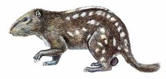
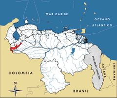

Dinomys branickii
| Pacarana | |
|---|---|
|  | |
| Riesgo de extinción | |
 En peligro (UICN) | |
| Clasificación científica | |
| Reino: | Animalia |
| Filo: | Chordata |
| Clase: | Mammalia |
| Orden: | Rodentia |
| Familia: | Dinomyidae |
| Género: | Dinomys |
| Especie: | Dinomys branickii |
| Nombre binomial | |
|
Dinomys branickii Peters, 1873 | |
| Distribución | |
|
 Mapa de distribución de Dinomys branickii | |
Contenido
Información de Evaluación
- Categoría y Criterio Regional: En Peligro A2cd
- Fecha de Evaluación Regional: 2015
- Evaluadores: Jesús Morales-Campos y Ariany García-Rawlins
- Categoría y Criterio Global: Preocupación Menor
Justificación
Evaluaciones Previas
1999: En Peligro (EN)
2008: En Peligro (EN)
Información General
Nombres comunes
Pacarana, lapa rabuda, lapo, piro, tecón, teconi, lapa cacique, guagua loba, Branick's giant rat.
Notas taxonómicas
Sinónimos
Descripción
Es el roedor más grande de los Andes tropicales y el segundo de Latinoamérica, luego del chigüire o capibara (Tirira et al. 2008b). Es un mamífero corpulento, de talla grande, con longitud cabeza-cuerpo que varía entre 47 y 51 cm, mientras que su masa corporal alcanza los 15 kg. Es robusto, de patas cortas con uñas muy fuertes, adaptadas para excavar, cabeza proporcionalmente grande, ojos y orejas pequeños y estas redondeadas, rostro corto y cuadrado, con vibrisas abundantes, gruesas y largas. A primera vista su apariencia general semeja a la de la lapa (Cuniculus paca), pero con cola larga (20-25 cm) y muy peluda; sin embargo, su pelaje es mucho más denso y largo, de color pardo oscuro y jaspeado; a cada lado de la región dorsal muestra dos líneas discontinuas de manchas blancas bien definidas, con un ancho promedio de un centímetro, seguidas en los flancos por al menos tres franjas de manchas difusas. Estos patrones de líneas comienzan en la parte posterior de la región escapular y terminan en la grupa y los cuartos traseros, mientras que en la región ventral desaparece el patrón de manchas y la coloración parda es más clara (White y Alberico 1992). Se conoce poco sobre sus hábitos y ecología, no obstante, la mayor parte de la información disponible proviene de animales en cautiverio (Tirira et al. 2008b). Son nocturnos e inician su actividad en el crepúsculo. Se alimentan de preferencia de frutos, hojas y raíces de plantas y suelen descansar en cuevas o madrigueras que construyen en la base de los árboles o en lugares con afloramientos rocosos. Estas madrigueras suelen ser grandes y pueden superar los cuatro metros de profundidad y alojan grupos familiares de alrededor de cuatro individuos, conformados por el macho, la hembra y dos de sus crías (Saavedra-Rodríguez et al. 2012). Estudios recientes han establecido que la presencia de Dinomys branickii se ve favorecida en ambientes cuyas coberturas del dosel superan el 20%, con abundantes afloramientos rocosos y pendientes superiores al 40%; su hábitat, alrededor de sus madrigueras, es de unas 2,5 ha (Tirira et al. 2008b, Saavedra-Rodríguez et al. 2012). Tienen un período de gestación más o menos largo, que se extiende por cerca de 252 días, y en general paren solo dos crías de unos 600-900 g de masa corporal. Son de desarrollo precoz, pues al segundo día de nacidos se muestran alertas y activos y son capaces de acicalarse y explorar su entorno. A las dos semanas inician el consumo de alimentos sólidos (Eisenberg y Redford 1999, Tirira et al. 2008b, Saavedra-Rodríguez et al. 2012).
Distribución
La pacarana es el único miembro viviente de la familia Dinomyidae, un grupo que tuvo su máxima diversificación en el Mioceno, por lo que es considerado en la actualidad un fósil viviente (Eisenberg 1989). Su distribución actual conocida comprende las selvas húmedas del piedemonte andino de Venezuela, Colombia, Ecuador, Perú, Brasil y Bolivia, en un intervalo altitudinal comprendido entre los 240 y 3400 m (Saavedra-Rodríguez et al. 2012). Todos los registros de distribución en Venezuela provienen de la cordillera de Mérida. Los primeros reportes pertenecen a la vertiente llanera, en el suroeste del estado Táchira entre 1000 y 1500 m de altitud (Boher y Marín 1988), y los más recientes proceden de la vertiente del lago de Maracaibo, en el estado Mérida, entre 650 y 2100 m de altura (P. J. Soriano y C. I. Aranguren obs. pers., M. Machado y J. Murillo com. pers.). Pese a su baja representación en las colecciones de museos, esta especie es bien conocida por los campesinos andinos, quienes la aprecian mucho como pieza de cacería y la llaman tecón (P. J. Soriano obs. pers.). Cabría esperar que más esfuerzo en trabajo de inventarios arroje una notable ampliación de la frontera actual de su distribución geográfica.
- Sistema: Terrestre
- Bioregión:
- Intervalo altitudinal (m): 240-3400
- Endémica: No
Situación
A nivel global Dinomys branickii se clasifica Vulnerable por considerar la declinación de sus poblaciones en más del 30% en los últimos diez años a causa de la sobreexplotación, la reducción de su distribución, así como por la destrucción y degradación de su hábitat (Tirira et al. 2008b). En Colombia también se cataloga Vulnerable, mientras que en Ecuador está En Peligro (Rodríguez-Mahecha et al. 2006, Tirira 2011). En Colombia algunos autores refieren que su distribución es muy discontinua y de modo natural escasa, lo cual se agrava por la destrucción de su hábitat y una fuerte presión cinegética, por lo que recomiendan calificarla Próxima a la Extinción (Rodríguez-Mahecha et al. 2006). En Venezuela está excluida del calendario cinegético del Ministerio del Poder Popular para Ecosocialismo y Aguas, lo cual implica que su cacería se encuentra prohibida. No obstante, existen fuertes indicios que se refieren a su cacería dentro del parque nacional El Tamá, única área protegida donde ha sido localizada (Boher y Marín 1988). Fue declarada Especie en Peligro de Extinción por medio del decreto N° 1486 (Venezuela 1996b).
- EOO (km2): Temporalmente sin información
- AOO (km2): Temporalmente sin información
- Tendencia Poblacional: Desconocida
Amenazas
Su elevada especificidad en selección de hábitat, la cual reduce su capacidad de expansión y establecimiento; las características de su biología reproductiva que lentifican su recuperación poblacional; y su relativa mansedumbre y talla, que la convierten en presa fácil y apetecible para depredadores, son rasgos que configuran a la especie como naturalmente vulnerable. Teniendo en cuenta esto, la expansión de la frontera agropecuaria que siempre trae apareadas la destrucción del hábitat y la cacería de subsistencia, constituyen las amenazas directas de mayor relevancia y se perfilan como «detonadores» del proceso de extinción.
Conservación
La situación actual de Dinomys branickii requiere la adopción de acciones de conservación en toda su área de su distribución, dirigidas a detener su cacería, en especial dentro de las áreas protegidas como el parque nacional El Tamá (Rodríguez, J. P. y Rojas-Suárez 2008). Estas medidas requerirían la combinación de iniciativas de guardería ambiental con programas de educación, que divulguen la prohibición de la caza y destaquen su valor como elemento singular de la fauna andina. También resulta necesario explorar otras zonas del país donde pudiera habitar, como el sector noreste de la cordillera de Mérida (estados Trujillo, Lara y Portuguesa), así como la sierra de Perijá en el estado Zulia (Boher y Marín 1988). Es muy importante explorar la posibilidad de establecer centros de cría de la especie con miras a concretar programas de reintroducción en áreas adecuadas (Collins y Eisenberg 1972, Rodríguez, J. P. y Rojas-Suárez 2008).
Autorías
Autores originales
Carla I. Aranguren, Yelitza Rangel-Gutiérrez y Pascual J. Soriano
Colaboradores
Ilustrador
Astolfo Mata
Referencias
- Aranguren, C. I., Rangel, Y. y Soriano, P. J. (2015). Pacarana, Dinomys branickii. En: J.P. Rodríguez, A. García-Rawlins y F. Rojas-Suárez (eds.) Libro Rojo de la Fauna Venezolana. Cuarta edición. Provita y Fundación Empresas Polar, Caracas, Venezuela. Recuperado de: animalesamenazados.provita.org.ve/content/pacarana Lun, 02/04/2018 - 14:03
- Boher, S. y Marín, B. (1988). El pacaraná (Dinomys branickii) en Venezuela, un mamífero para nuestra fauna. Natura 84: 14-18.
- Collins, L. M. y Eisenberg, J. F. (1972). Notes on the behaviour and breeding of pacaranas Dinomys branickii in captivity. International Zoo Yearbook 12: 108-114.
- Eisenberg, J. F. (1989). Mammals of the Neotropics. The Northern Neotropics (Vol. 1). Panamá, Colombia, Venezuela, Guyana, Suriname, French Guiana. University of Chicago Press. Chicago y Londres. 449 pp.
- Eisenberg, J. F. y Redford, K. H. (1999). Mammals of the neotropics: Volume 3. The University of Chicaco Press, USA. Ecuador, Peru, Bolivia, Brazil. 609 pp.
- Rodríguez-Mahecha, J. V., Alberico, M., Trujillo, F. y Jorgenson, J. (Eds.) (2006). Libro Rojo de los Mamíferos de Colombia. Serie Libros Rojos de Especies Amenazadas de Colombia. Conservación Internacional, Ministerio del Ambiente, Vivienda y Desarrollo Territorial. Bogotá, Colombia. 433 pp.
- Rodríguez, J. P. y Rojas-Suárez, F. (1999). Libro Rojo de la Fauna Venezolana, segunda edición. PROVITA, Fundación Polar. Caracas. 444 pp.
- Rodríguez, J. P. y Rojas-Suárez, F. (Eds.) (2008). Libro Rojo de la Fauna Venezolana, tercera edición. Provita y Shell Venezuela, S. A. Caracas, Venezuela. 364 pp.
- Saavedra-Rodríguez, C. A., Kattan, G. H., Osbahr, K. y Hoyos, J. G. (2012). Multiscale patterns of habitat and space use by the Pacarana Dinomys branickii: Factors limiting its distribution and abundance. Endangered Species Research 16(273-281).
- Tirira, D. G. (2011). Libro Rojo de los mamíferos del Ecuador. 2a. edición. Fundación Mamíferos y Conservación, Pontificia Universidad Católica del Ecuador y Ministerio del Ambiente del Ecuador. Publicación especial sobre los mamíferos del Ecuador 8. Quito.
- Tirira, D. G., Vargas, J. y Dunnum, J. (2008b). Dinomys branickii. The IUCN Red List of Threatened Species. Version 2013.2. Disponible en www.iucnredlist.org, consultada el 21 de febrero de 2014.
- Venezuela. (1996b). Decreto 1486: Especies en Peligro de Extinción. Gaceta Oficial No. 36.062- 10 de octubre de 1996. Caracas.
- White, T. G. y Alberico, M. S. (1992). Dinomys branickii. Mammalian Species 410: 1-5.